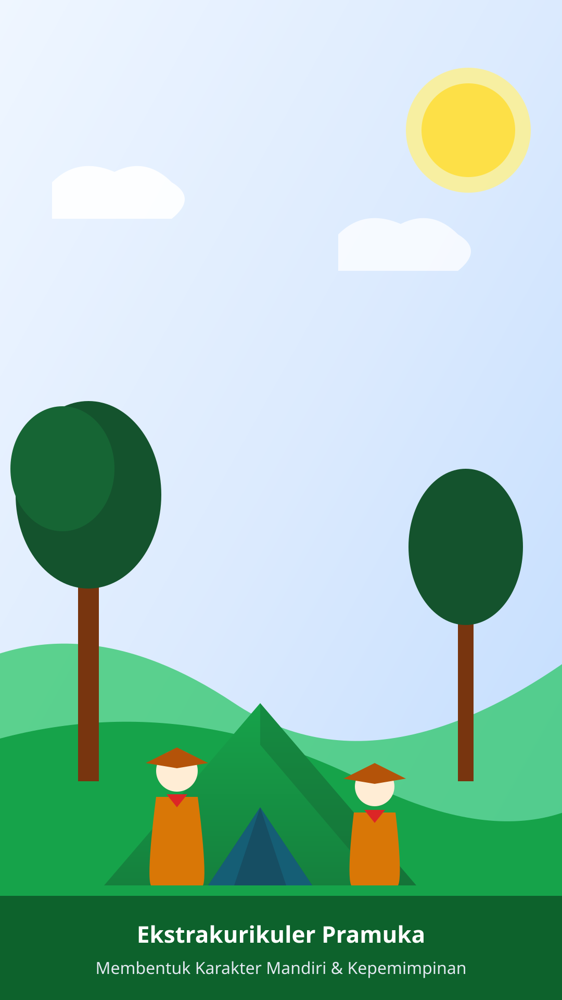
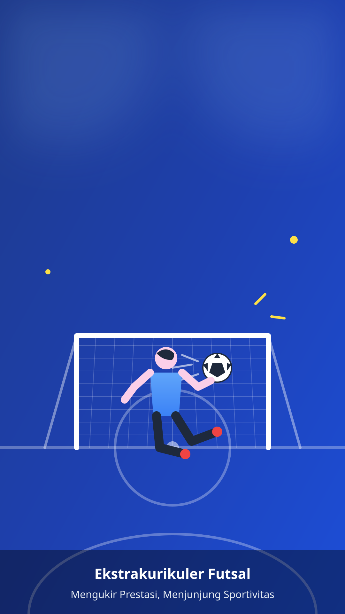
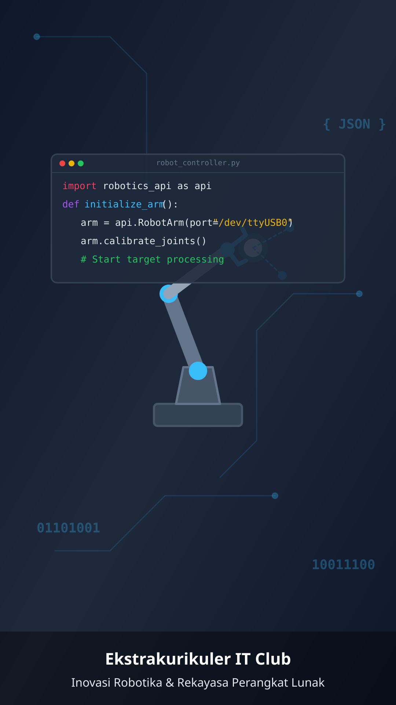
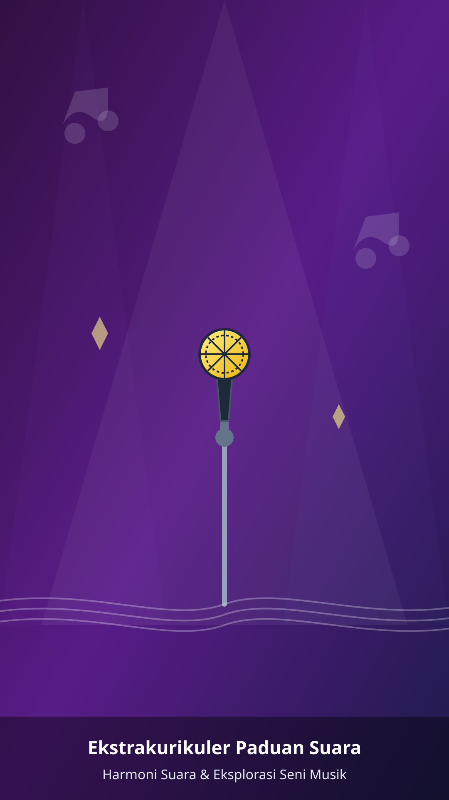
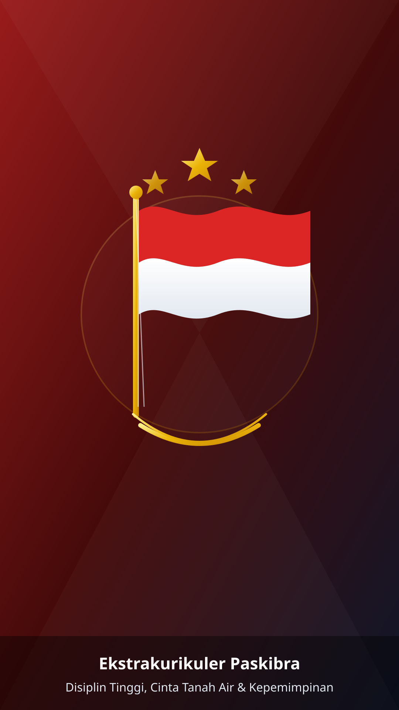

Galeri Kegiatan
Ekstrakurikuler
Lihat keseruan aktivitas siswa-siswi kami melalui cerita interaktif di bawah ini. Klik salah satu lingkaran untuk membuka cerita!

Pramuka

Futsal

IT Club

Paduan Suara

Paskibra
Jelajahi Selengkapnya Keseruan Kami!
Dapatkan update harian kegiatan siswa, dokumentasi kegiatan ekstrakurikuler ter-up-to-date, dan momen keseruan sekolah lainnya langsung di Instagram resmi kami.
Meluncur ke Instagram